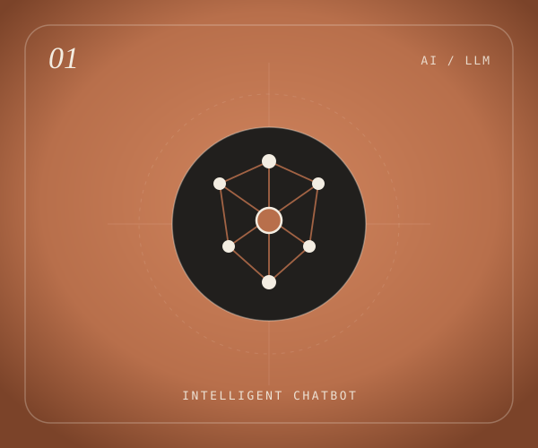

01
Programming
- Python
- C++
- JavaScript
Python for intelligence, C++ for performance, JavaScript for experience.
Open to internships & collaborative work
Hello, I'm Tejas — K. Tejas Reddy
I build modern digital experiences through software engineering, creative development and emerging technologies — from language models to the interfaces around them. B.Tech CSE (AI & Data Science) student at NIAT.
01 About
assets/images/profile.jpgI wanted to know how things worked, not just that they did — and that curiosity eventually led me from programming into artificial intelligence.
Hey — I'm Tejas. I'm the kind of person who gets genuinely excited when a model converges, a query runs faster than expected, or an interface finally feels right. Today I work across the full stack of intelligent systems — training language models, designing the databases underneath them, and building the screens people actually touch.
“The best way to predict the future is to build it — one commit at a time.” A reminder for slow debugging days
02 Technical skills
I try to understand why each tool earns its place, rather than collecting a list of languages.
Python for intelligence, C++ for performance, JavaScript for experience.
SQL for the ground truth underneath everything else.
Building things that learn, predict, or quietly make someone's day easier.
The fundamentals that make every other tool easier to learn.
03 Visual showcase
An image rendered as a two-tone dither. Move across it to reveal full colour — the veil knits itself back together. Click or tap for a ripple.
04 Projects

05 Experience & journey
Studying at NIAT — Takshasila Institute, Pondicherry, focusing on machine learning, LLMs and full-stack systems.
EducationEditable placeholder — add the organisation, role and what you shipped.
Placeholder · ExperienceEditable placeholder — add a course, research project, or competition.
Placeholder · MilestoneEditable placeholder — only add what you can verify.
Placeholder · Achievement06 Education
07 Contact
Whether it's an internship, a collaboration, a role on your team, or just a good conversation about AI — send it over. I read everything myself.
Email tejasreddy005@gmail.com ↗